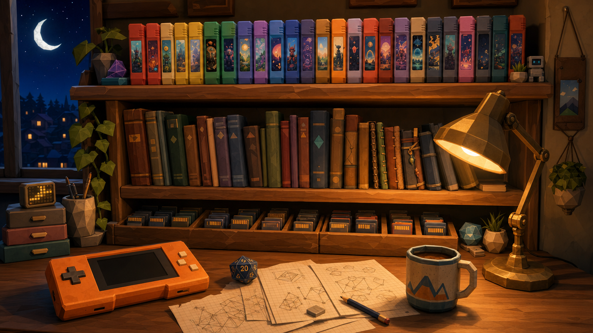

OPTION A
The Night Study
The 2 AM room. One big wall shelf is the whole site, and the camera slides along it.
How it works in 3D
- Each shelf tier is one section: cartridges on top, writing in the middle, career cards in the tray
- Hover pulls an object forward; click brings it to the desk under the lamp
- Inserting a cartridge into the handheld plays the project on its screen
Strengths
- Simplest to build and to read; works well on phones as a vertical scroll
- Most personal: the √−1 night, the d20, graph-paper sketches
- The handheld is landscape and looks the most original